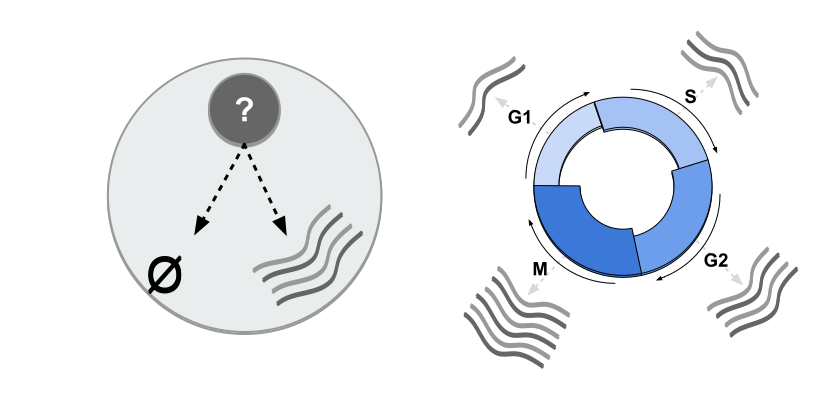
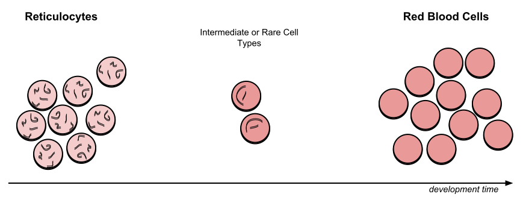

An introduction to scRNA-seq data analysis
Contributors
Questions
How are samples compared?
How are cells captured?
How does bulk RNA-seq differ from scRNA-seq?
Why is clustering important?
Objectives
To understand the pitfalls in scRNA-seq sequencing and amplification, and how they are overcome.
Know the types of variation in an analysis and how to control for them.
Grasp what dimension reduction is, and how it might be performed.
Be familiarised with the main types of clustering techniques and when to use them.
Single-cell RNA-seq
An introduction to scRNA-seq data analysis
Speaker Notes
- Greetings everybody and welcome to the Galaxy single cell RNA-seq analysis workshop.
- Here we will walk you through some of the basics and concepts when dealing with single cell data.
Bulk RNA-Seq
.pull-left[]
.pull-right[ .reduce90[
| Attribute | Summary |
|---|---|
| Resolution | Entire tissues |
| Signal | Average gene expression per tissue |
| Differential Expression | Difference between average gene expression between tissues |
] ]
Speaker Notes
- Let’s start with what the differences are between Bulk RNA-seq and single cell RNA seq data.
- With Bulk RNA-seq we compare two tissues by looking at the average expression of each gene detected across each of the tissues.
- Due to the number of RNA molecules being considered, the sequencing depth and the strength of the analysis is reasonably high.
- The differential expression is then measured as the relative expression of a given gene between one tissue and another.
Single Cell RNA-Seq
.pull-left[ ]
]
.pull-right[ .reduce90[
| Attribute | Summary |
|---|---|
| Resolution | Individual cells within tissues |
| Signal | Individual gene expression per cell |
| Differential Expression | Some cells express the same set of genes in the same way; comparing one set of cells against another |
] ]
Speaker Notes
- With single cell RNA-seq analysis, the stage shifts away from measuring the average expression of a tissue.
- And towards measuring the specific gene expression of individual cells within those tissues.
- Here we are no longer comparing tissue against tissue, but cell against cell.
- Each cell is assigned a gene profile which describes the relative abundance of genes detected within it.
- Many cells share the same gene profile, where a gene profile ideally describes a cell type.
- Sometimes we need to compare single-cell datasets across tissues, and we see that many cells across tissues share the same cell type.
- For example, look at the purple and green gene profiles which are shared across both tissues.
From Bulk RNA to Single Cell RNA
.image-50[ ]
]
.reduce90[
- In order to quantify RNA at the level of individual cells:
- New methods of library preparation
- New methods of sequencing
- New methods of quality control
- New methods of analysis ]
Speaker Notes
- New technologies means new methods and techniques to harness the new features that come with them.
- Single-cell RNA-seq data requires different means of library preparation, sequencing, quality control and analysis.
Cell Capture and Replicates
.center[How do we prepare samples for sequencing?]
Speaker Notes For example, how are cells captured and sequenced?
–
.pull-left[ .reduce90[
Bulk RNA-seq
- Cut a thin slice of a tissue
- Add enzyme to break down cell walls
- Rinse out the unwanted DNA / RNA material
- Perform sequencing on leftover goop
] ]
Speaker Notes In bulk RNA-seq analysis, the process involves taking a sample, removing unwanted molecules and sequencing everything else.
–
.pull-left[ .reduce90[
Single-cell RNA-seq
- Cut a thin slice of a tissue
- Breakdown a tissue into cells
- Isolate each cell
- Add enzyme to break down cell walls
- Perform barcoding
- Perform sequencing in a common pool
] ]
Speaker Notes
- For single cell analysis, the process is much the same, except that each sample is a cell.
- And must therefore be sequenced separately from other cells.
- Once isolated, unique barcodes are added to each cell, and then sequenced.
–
Biological Replicates
.center[ .reduce90[
| Type | Notes |
|---|---|
| Bulk RNA-seq | Each tissue slice is a sample, can take another slice |
| Single-cell RNA-seq | Each cell is sample, cannot directly replicate because unique |
] ]
Speaker Notes
- The level of resolution in single-cell is at the cell level, and each cell is unique.
- Therefore, the concept biological replicates is not quite the same as that in bulk RNA-seq.
Capture / Sorting:
How are cells isolated?
Speaker Notes Cell isolation can be performed in different ways.
–
.pull-right[.image-90[]]
.pull-left[ .reduce90[
- Manual pipette:
- Use a thin glass tube to suction up a cell
- Maintain pressure in tube
- Transport to new environment
- Release pressure in tube ] ]
Speaker Notes One method is manual pipetting, where wet lab scientists suction up individual cells using a long thin tube.
–
.pull-left[ .reduce90[
- Repeat 1000 times to isolate 1000 cells
- Error-prone ] ]
Speaker Notes They can do this hundreds of times to isolate hundreds of cells, but it is error-prone, and often multiple cells are isolated together.
–
.pull-left[ .reduce90[
- Automatic pipette:
- Flow cytometry ] ]
Speaker Notes Another method is flow cytometry, which reduces the human-error component of this stage.
Capture / Sorting: Flow Cytometry
.pull-right[ ]
]
.pull-left[ .reduce90[
- Stream cells along a liquid through a narrow tube
- Narrow to permit one cell at a time
- Fluid enough to allow high-throughput. ] ]
.pull-left[ .reduce90[
- Screen each cell with a laser to probe properties:
- Cell Size and Type
- Front scatter vs Side scatter
- Cell Type by Fluorescent Labelling
- Cell Surface Markers (CDs)
- Fluorescent Labelling ] ]
- Cell Size and Type
.pull-left[ .reduce90[
- Isolate a cell into its own sequencing environment ] ]
Speaker Notes
- Flow cytometry floats cells in a shallow liquid bath and streams them along a narrow channel, just narrow for one cell to pass through.
- Cells can be screened by a variety of properties this way, such as by their light scatter properties, and from fluorescent cell labelling.
- Cells can be tagged and isolated in this manner.
Capture / Sorting: Size and Type
.pull-right[
]
.pull-left[ Optical Scatter
- Ratio of Cell Size:Wavelength
- If Cell Size < Laser Wavelength (~400nm)
- Low intensity and high inconsistency scatter
- Measured in terms of:
- Forward Scatter (FSC)
- Side Scatter (SSC)
]
Speaker Notes
- Optical scatter properties can be used to probe size and consistency of the cell, where cells with a smaller size than the laser wavelength yield lower intensities and more inconsistent scatter patterns.
- There are two main types of optical scatter: Forward scatter, and Side scatter.
Capture / Sorting: Size and Type
.pull-left[ .reduce90[ Forward Scatter (FSC)
- Measures along the path of the laser
- FSC intensity proportional to diameter of cell
- Good for distinguishing between immune cells ] ]
.image-75[.pull-right[]]
Speaker Notes
- Forward scatter is aligned with the main laser and measures the diameter of cell, which is ideal for distinguishing different cells by their size profiles.
- For example monocytes, which are typically larger than lymphocytes, as seen on the X-axis of the example image.
–
.pull-left[
.reduce90[
Side Scatter (SSC)
- Measures 90° to laser, along path of cells
- Much weaker intensities than FSC
- Refraction/reflection proportional to granularity of cell ] ]
.image-75[.pull-right[ ]]
]]
Speaker Notes Side scatter is perpendicular to the main laser, and measures the granularity of the cell, ideal for distinguishing cells with less defined internal structures, such as the granulocytes on the Y-axis of the example image.
Capture / Sorting: FACS
.pull-left[
 .footnote[.reduce70[Image from BD Biosciences]]
]
.footnote[.reduce70[Image from BD Biosciences]]
]
.pull-right[ .reduce90[ Fluorescence-Activated Cell Sorting (FACS)
- Cell surface markers
- Fluorescent Markers for each cell
- Positive and Negative
- Whether cell activated for that CD or not.
- Plot different CD markers against each other
- Isolate cell populations
- Can set gating thresholds to isolate analysis to enriched subset of cells
] ]
Speaker Notes
- Cells can also be gated and characterised by their cell surface markers via FACS.
- By plotting different surface marker intensities against one another, cells can be separated, gated, and labelled based on these fluorescent properties.
Barcoding Cells
.center[ ]
]
.footnote[Add unique barcodes to every transcript in a cell]
Speaker Notes
- Once isolated, cells can be barcoded.
- Barcodes are unique sequences that are added to each RNA molecule.
- They are not unique to the molecule, but unique to the cell such that any two RNA molecules will be tagged by the same cell barcode, should they exist in the same cell.
- RNA molecules from different cells will have different cell barcodes.
Barcoding Cells
.footnote[Place cells into sequencing plate]
.pull-left[ ]
]
.pull-right[ .reduce90[
-
From a pool of many many different tissue samples / cells:
- Cell Barcodes tell us which cell the transcript from
- UMIs can tell us how much the transcript was amplified, by comparing it with other transcripts from the same gene with the same UMI tag. ] ]
Speaker Notes Once the RNA molecules have been tagged by cell barcodes, they can be amplified, either separately or pooled together, where the amplified products share the same cell barcodes as their original counterparts.
Sequencing Issues: Amplification
.center[.image-75[ ]]
]]
.reduce90[
- Polymerase Chain Reaction (PCR)
- Takes a single-stranded read and duplicates it
- Works well when enough reads are present in pool
- Low coverage
- When reads in sequencing pool are low, many will be missed
- Can lead to one-sided amplification ]
Speaker Notes
- PCR amplifies the gene products to make them more easily detectable during sequencing.
- When there is a lot of gene product to amplify, as is the case for bulk RNA-seq, PCR works quite well in amplifying all products in a reasonably well-represented manner.
- However, in the case of single-cell products, the amount to amplify is very small, and many unique reads might be missed during this phase whereas others may be over amplified, as shown in the blue and red transcripts in the example.
Sequencing Issues: Amp. + UMIs
.pull-left[ ]
]
.pull-right[ .reduce90[
-
How many red transcripts in the cell?
-
After PCR amplification?
-
What do the little coloured tags at the start of each transcript do?
-
Unique Molecular Identifiers (UMIs)
-
Added to help mitigate bias from amplification. ] ]
Speaker Notes
- To guard against this type of amplification bias, we can add a random element to the barcoding.
- These random barcodes known as UMIs, uniquely tag transcripts such that any two transcripts of the same gene are likely to have different random barcodes.
Sequencing Issues: Amp. + UMIs
.pull-left[]
.pull-right[
.center[Counting Reads
| Reads | |
|---|---|
| Red | 6 |
| Blue | 3 |
] ]
Speaker Notes
- Let us consider the example to the left: we have 2 red transcripts and 2 blue transcripts inside the cell, which after amplification equate to 6 red transcripts and 3 blue transcripts.
- If we were to compare the differential gene expression between the red and blue transcripts, just by looking at the amplified reads, we would come to the false conclusion that the red transcripts are expressed twice more than the blue.
–
.pull-left[
.center[Grouping Reads by Gene and UMI
| UMIs | Reads | |
|---|---|---|
| Red | Pink | 2 |
| Cyan | 4 | |
| Blue | Pink | 1 |
| Green | 2 |
] ]
.pull-right[
.center[Counting de-duplicated Reads
| UMIs (Grouped) | # UMIs | |
|---|---|---|
| Red | {Pink, Cyan} | 2 |
| Blue | {Pink, Green} | 2 |
] ]
Speaker Notes However if we group the reads by their UMIs, and then count only the number of unique UMIs per transcript, de-duplicating the reads which share the same transcript and UMI, we arrive at 2 red reads and 2 blue reads which better represents the true number of transcripts.
Sequencing Issues: Unique UMIs?
.pull-left[]
.pull-right[
| UMIs | #Reads | |
|---|---|---|
| Red | {Pink, Cyan} | 2 |
| Blue | {Pink, Green} | 2 |
.reduce90[
- Pink appears twice in different genes.
- In what context are UMIs unique? ]
]
Speaker Notes
- UMIs are relatively random, but not truly random.
- Notice that the pink UMI appears twice: once in the blue transcript and once in the red transcript.
–
.reduce90[
-
Can every transcript in a cell have its own UMI?
- Number of mRNA transcripts in a cell?
- ~ 10⁵ to 10⁶ in a mammalian cell.
- Require at minimum barcodes of length N, where 4ᴺ = 10⁵ ]
Speaker Notes This is due to there being often more transcripts than available UMIs, both which are dependent on the number of transcripts in a cell, and the length of the barcode.
Sequencing Issues: Unique UMIs?
.center[Barcodes of length N with Edit Distance of B:]
.pull-left[
.center[N = 5 and B = 1]
AAAAA AAAAC AAAAG AAAAT AAACA ····
CCCCC CCCCA CCCCG CCCCT CCCAC ····
·
·
·
.center[4⁵ = 1024 barcodes]
]
.pull-right[
.center[N = 5 and B = 2]
AAAAA AAACC AAAGG AAATT AACCA ····
CCCCC CCCAA CCCGG CCCTT CCCAA ····
·
·
·
.center[4⁵⁻¹ = 512 barcodes]
]
.footnote[
Edit distances guard against sequencing errors.
]
Speaker Notes
- Consider a set of barcodes of length 5 with an edit distance of 1 between adjacent barcodes, and another set with an edit distance of 2.
- The former is not robust against common sequencing errors of 1 base pair, but the latter only allows for half the number of barcodes.
- This trade-off between the number of available barcodes and guarding against sequencing errors is instrumental in the design of cell barcodes and UMIs.
Sequencing Issues: Unique UMIs?
.pull-left[]
.pull-right[
| UMIs | # Reads | |
|---|---|---|
| Red | {Pink, Cyan} | 2 |
| Blue | {Pink, Green} | 2 |
.reduce90[
- Pink appears twice in different genes.
- In what context are UMIs unique?
]
]
.reduce90[ In what context are UMIs unique?
- UMIs are “random salt”
- ‘Unique enough’ at the transcript level
- We wish to count transcripts only
- De-duplication of UMIs at transcript level
- Good estimation of true transcript abundance ]
Speaker Notes In the context of amplification, UMIs do not need to be unique, they just need to be random enough to deduplicate transcripts in order to give a more accurate estimate of the number of transcripts within a cell.
Cell Barcodes and UMIs (Recap)
For Each Cell:
- Add Cell Barcodes to Cells
Speaker Notes So let’s just recap what we’ve learned: First each cell has cell barcodes added to each RNA molecule in each cell.
Cell Barcodes and UMIs (Recap)
For Each Cell:
- Add Cell Barcodes to Cells
- Add UMIs to Cell Barcoded Cells

Speaker Notes
- Then we add random UMIs to all transcripts, which further tag the molecules.
- These can then be used deduplicate the transcripts after amplification.
- After amplification we need to perform some quality control.
QC: Overcoming Background Noise
.center[ ]
]
- Num. features per cell, and library size should follow a normal curve.
- Min-Max filtering helps clip off the fat-tails of a distribution.
Speaker Notes
- One way to do this is to set thresholds on the limits of detectability for genes and for cells.
- Consider an analysis governed only by 3 genes (G1, G2 and G3), and 5 cells (A, B, C, D and E).
- The first row of the top table defines the library size, which is total number of messenger RNAs across all genes in each cell.
- The subsequent rows are the thresholds of gene detectability, displaying how many genes are detected in each cell for genes greater than the threshold amounts of 0 to 4.
- We see that even a threshold of greater than 3 transcripts detected in a given cell still keeps 3 cells in the analysis: B, C, and E. In the lower table, the opposite is represented, with the total number of transcripts across all cells for each gene.
- By setting thresholds of detectability, we can see how many cells are described by the gene for that threshold.
- In both cases, we can see that if we set the thresholds too low, then we risk keeping low quality genes or cells, but if we set the thresholds of detectability too high, then we risk losing too many.
Normalisation: Bulk vs Single-Cell
.pull-left[
Bulk RNA-seq: High Coverage
| T1 | T2 | T3 | |
|---|---|---|---|
| GeneA | 100 | 80 | 40 |
| GeneB | 45 | 30 | 40 |
.reduce70[* Median Gene Expression is high]
scRNA-seq: Very Low Sequencing Depth
| C1 | C2 | C3 | C4 | C5 | |
|---|---|---|---|---|---|
| GeneA | 0 | 0 | 2 | 0 | 1 |
| GeneB | 2 | 0 | 15 | 0 | 0 |
.reduce70[* Median Gene Expression is zero]
]
.pull-right[
Why is this a problem?
.center[ \(R(s,g) = \frac{X\\_{sg}}{(\prod\\_{s} X\\_{s})^{\frac{1}{n}}}\)
\[DESeq(s,g) = \frac{X\\_{sg}}{Med(R\\_{s})}\]] ]
Speaker Notes
- Filtering can be a luxury however, as many single-cell RNA-seq datasets have typically low sequencing depth compared to bulk RNA-seq.
- During the process of normalisation, samples are scaled against one another to make them more comparable.
- This is normally performed by using median values. For example, for DE-Seq normalisation, the geometric mean count for a cell is taken, and each gene value in that cell is divided by it and by the median value of all geometric means of all cells.
- If median gene expression is high, then this normalisation method works quite well.
–
.pull-right[ Can’t divide by zero! ]
Speaker Notes
- But if the median gene expression is zero, as is often the case with single-cell data, then we have the problem of dividing by zero.
- There are methods to get around these zero counts.
Normalisation: SCRAN method
.footnote[.small[Pooling across cells to normalize single-cell RNA sequencing data with many zero counts, Lun et al., 2016]]
.pull-left[ ]
]
.pull-right[ .reduce90[
-
Calculate the library sizes of all cells
-
Calculate the library size of a pseudo reference cell (average)
-
Separate odd sizes (red) and even sizes (blue) into two groups
-
Sort each group by library size and place on opposite sides of a “ring” ] ]
Speaker Notes
- One such method is the SCRAN method which works by creating overlapping pools of cells such that any individual cell is characterized by cells of similar library sizes.
- The method involves splitting all cells into an odd and even group by their library size, and arranging them onto a ring structure where neighbouring cells on the ring have similar sizes.
Normalisation: SCRAN method
.footnote[.small[Pooling across cells to normalize single-cell RNA sequencing data with many zero counts, Lun et al., 2016]]
.pull-right[ ]
]
.pull-left[ .reduce90[
-
Define overlapping pools of adjacent cells of size k
- For each pool
- Sum the library sizes of all cells within
- Derive a size factor by dividing by the reference cell
- For each cell
- Find which pools it belongs to
- Build a linear model using these size factors
- Estimate the size factor of the cell on this linear model ] ]
Speaker Notes
- Overlapping pools of fixed sizes are defined, resulting in each cell being defined by multiple pools.
- A linear model for that cell can then be built by the pools it occurs within, and normalisation factors for all cells can be determined this way.
Normalisation: SCRAN method
.footnote[.small[Pooling across cells to normalize single-cell RNA sequencing data with many zero counts, Lun et al., 2016]]
.center[ ]
]
Speaker Notes
- By this method, the issue of low sequence coverage is worked around by turning cells with low library sizes into useful components of a size factor that can be applied to similar cells.
- Such novel normalization methods were commonplace a few years ago, but as sequencing technologies have improved, the issue of many zero counts in a matrix becomes less important, and normalisation size factors can be derived using bulk RNA-seq methods once again.
Wanted vs Unwanted Variation
.pull-right[]
.pull-left[ .reduce90[ Wanted Variation
- Expression from the top most differentially expressed genes
Unwanted Variation
- “Confounders”
- Technical Variation
- Batch source
- Library Size
- Biological Variation
- Intrinsic cell noise ] ]
Speaker Notes
- Other factors that we need to take into account during a single cell RNA analysis are the unwanted factors that can confound the analysis.
- Ideally we wish to see the gene profiles that separate different types of cells are driven by biological variance.
- There is however confounding variation from both technical and biological sources that are not useful to the analysis but do contribute to the variance.
Confounding Variation: Biological
.center[]
.pull-left[ .reduce90[ .center[Transcription Bursting]
- Transcription not continuous, occurs in “bursts”
- Phenomenon hidden in bulk RNA-seq ] ]
.pull-right[ .reduce90[ .center[Cell Cycle]
- Cells of the same type have twice the amount of mRNA at M-phase than G1-phase ] ]
Speaker Notes
- Confounding biological variance appears in two forms: Transcriptional bursting, and Cell cycle variation.
- Transcriptional bursting is a phenomenon that occurs in cells in which transcription occurs in discrete states of active and inactive, where the interval between these states is hard to model.
- In bulk RNA-seq, this phenomenon is unnoticeable as the effects are averaged out over many cells. But in single cell, two cells of the same type may exhibit different gene profiles simply because one cell was actively transcribing and the other was not.
- This is not something we can control for in the analysis, but it is something we should be aware of when understanding why cell clusters can be noisy.
- Cell cycle variation on the other hand is a much more well understood process, where the amount of RNA in a cell is approximately double that from a cell of the same type due to one being in the early G1 phase and the other being in the M-phase during the cell cycle.
- There are genes which are known to covary with the cell cycle, and so by regressing the effect of these genes, we can control against the cell cycle.
Confounding Variation: Technical
.center[ ]
]
.pull-left[ .reduce90[ Amplification Bias
- Different transcripts are amplified more than others
- Mitigated via UMIs ] ]
.pull-left[ .reduce90[ Dropout Events
- Some genes are falsely not detected in cells
- Mitigated via better capture methods and normalisation ] ]
Speaker Notes
- Confounding technical variance appears in a three forms: Amplification bias, Dropout events, and Library size variation.
- Amplification bias can be mitigated by UMIs as demonstrated before.
- Dropout events give rise to the prevalent zeroes in the count matrices, and their effect can be reduced by using clever normalisation techniques such as the pooling method shown previously, as well as by using better sequencing methods.
Confounding Variation: Technical
.center[]
Library Size Variation
- Cells have different transcription rates and capture rates
- Mitigated via normalisation
Speaker Notes
- Library size variation arises for a variety of different reasons, but is the main source of variation within an analysis.
- Like bulk RNA-seq, this is reduced with good normalisation methods.
Relationships Between Cells
Consider:
- 1,000s of Cells
- 10,000s of Genes
- 10k dimensional dataset, with 1k observations
Aim:
- Find groupings of Cells in a subset of these Genes
Note:
- Some cells can have very similar expression in one gene, and very far different expression in all others.
- How to represent this?
Speaker Notes
- Once we have removed unwanted confounders from the analysis we have the issue of quantifying the relationships between cells.
- From a data analysis standpoint, we treat each cell as an observation, and each gene as a variable.
- For large genomes this means extremely high dimensional datasets. Cells exist as points in this extremely sparsely populated high dimensional space, making it difficult to see the natural groupings.
- The high dimensional space can be reduced a lot by simply filtering out genes that do not appear to be differentially expressed across all cells.
- To find the relationships between these cells however, we need to define the distances between cells.
Distance Matrix

Speaker Notes
- A distance matrix does just this, defining the distance between any two cells by a single score.
- Here we use the Euclidean distance on a 3 dimensional dataset of 3 genes (G1, G2 and G3), and 3 cells (R, P and V).
- The distance between any two cells can be calculated as the sum of squares of the difference in gene values.
- Note how the distance matrix is symmetrical along the diagonal, confirming that for example the distance from cells R to V is the distance from V to R as expected.
Relatedness of Cells: KNN

- Perform K-nearest neighbours to connect edges to cell vertices.
Speaker Notes
- Once a distance matrix is generated, we can perform K-nearest neighbours upon the distance matrix where directed edges are generated between cells.
- For each row of the distance matrix, K of the cells with the smallest distance values are selected representing the nearest neighbour that current row’s cell has to the selected column cells.
- If the edges are mutually shared between neighbouring cells, then this is called a shared nearest neighbour approach.
Dimensional Reduction
.pull-left[ .reduce90[ Aim:
- Take a high-dimensional dataset and reduce it into a lower dimension that we can understand.
- e.g. 10000-D → 2D ] ]
.pull-right[ .reduce90[ Constraint
- Preserve the high dimensional topology in a low dimensional space.
- e.g. if Cell A is far from Cell D yet close to Cell B in 3D, it should replicate those relationships in 2D. ] ]
Speaker Notes
- We can represent this 3 dimensional space easily as 3 independent axes with points that denote the cells.
- Extrapolating this relatively low dimensional example set to a real dataset which thousands of dimensions is beyond the scope of human possibility.
- Dimensional reduction is a type of technique that takes a high dimensional dataset and produces a low dimensional representation, usually 2 dimensional, that tries to preserve the distances between the data points.
- Here the relative differences between cells is maintained in both the high and low dimensional representations.
- There are many different kinds of dimension reduction techniques, each with their own strengths and weaknesses dependent on the type and the dimensionality of the data.
Clustering
.pull-left[.image-100[ ]]
]]
.pull-right[ .reduce90[
- 2D Projection
- Each dot is a cell
- Clustering colours the dots, where different coloured cells belong to different clusters
- Different clusters represent different cell types ] ]
Speaker Notes
- Once the number of variables of the dataset have been sufficiently reduced via filtering and dimensional reduction, clustering can be performed more easily.
- Here in this 2D projection, each circle is a cell, and the unique colours depict the clusters they have been assigned to.
- The physical distances between the groups of coloured cells tell us how good the clustering is for this projection.
Clustering
.pull-left[.image-100[ ]]
]]
.pull-right[ .reduce90[
- 2D Projection
- Discrete Cell Types
- Each cluster should represent a different type
- Look for the most DE genes in each cluster
- Find the marker genes → Cell Type ] ]
Speaker Notes
- By inspecting the top differentially expressed genes in each cluster against all other clusters, clues to the type of cell that the cluster describes can be found.
- Cell types are often characterized by the expression of specific marker genes, and the presence of these genes are strong indicators of type.
- Marker gene discovery can then be used to annotate the clusters.
Clustering
.pull-left[.image-100[ ]]
]]
.pull-right[ .reduce90[
- 2D Projection
- Discrete Cell Types
- Relationships infer Lineage
- Neural Stem Cells differentiate into mature cell types
- Lineage trees are constructed by taking into account
- Entropy of cluster
- Proximity of cluster ] ]
Speaker Notes We can also further derive the relationships between these clusters by computing lineage trees based on the amount of noise in each cluster, with the expectation that stem cells have noisy expression profiles yielding broader clusters, and mature cells have very clear expression profiles yielding tighter clusters.
Clustering: Hard vs Soft
| .image-100[] |
.image-100[] |
| .center[Hard] | .center[Soft] |
| Big spaces between clusters | Clusters bleed into one another |
| Cell types are well defined and the clustering reflects that | Cell types seem to intermingle with one another. |
Speaker Notes
- The types of clustering you are likely to encounter in an analysis is dependent on the input datasets, where cells taken from late stage samples are less likely to be bunched together and are more likely to yield large visible gaps known as hard clusters that clearly defined different types.
- Earlier stage datasets are more likely to yield softer clusters, where neighbouring clusters share soft boundaries as clusters intermingle slightly with one another.
Continuous Phenotypes:
.center[] .reduce90[
- Cells aren’t discrete, they transition
- Continuously changing over time from a less mature type to more mature type ]
Speaker Notes Soft clustering is to be expected, since although clustering is a statistical method for discretely partitioning data, the underlying cell biology of the data is a continuous process, where cells transition from one well-defined state to another through intermediate stages which are represented in-between two cluster centres.
Performing Clustering
.pull-left[ ]
.pull-right[ .reduce90[ Dynamic datasets with continuously dynamic clusters
- single-cell datasets
- PCA is too discrete in partitioning data
- Manifold learning algorithms, learn the landscape
Variety of different clustering methods
- K-means
- K-medians
- Hierarchical Clustering
- Community Clustering ] ]
Speaker Notes
- Because of the continuous nature of these single-cell datasets and the extremely high dimensionality of the data, discrete partitioning is often a poor model for partitioning the data.
- If we instead assume that cell clusters are related to one another via transitional cells which would naturally lie in-between clusters, then manifold learning techniques are better suited.
- These techniques derive an expression landscape that can not only be used to relate clusters to one another, but also can be used to infer lineage and hierarchy.
- To actually perform the clustering there are three commonly-used methods: K-means, hierarchical and community clustering.
Performing Clustering: K-means
.pull-right[ ]
]
.pull-left[ .reduce90[ K-means
- Initialise k random positions
- Iteration Step:
- Calculate distance from each cell to each k position
- Assign each cell to it’s nearest k
- Set new k positions to the mean position of all cells in that group
K-medians
- Same as above, but use median position instead
- Less influenced by outliers
] ]
Speaker Notes
- K-means and K-medians follow the same method: the number of clusters are defined before hand, and initialised in random positions.
- The positions are then updated by the contribution of the cells more closer to it than to other positions.
- This process occurs multiples times until the positions no longer significantly change or until a set number of iterations have been achieved.
- The final assignment of each cell then becomes the cluster assignment.
Performing Clustering: Hierarchical
.pull-left[]
.pull-right[ .reduce90[
- Use the distance matrix to find the two closest points
-
Merge and repeat
- Yields a dendrogram
- Hierarchy of clusters:
.image-90[ ]
]
Speaker Notes
- Hierarchical clustering is more flexible and does not need an initial parameter to define the number of resulting clusters.
- Here the two closest points in a distance matrix are joined into a single group, distances are recalculated, and the two closest points are once again joined.
- This process repeats until all data has been consumed into one.
- By tracing the process backwards, a hierarchy can be established that is represented by a dendrogram.
Community Clustering: Louvain
.center[![A graph is shown with dots connected by lines. Below, those dots have expanded and pink touches orange and nearly touches purple. It asks pink by iteself? And notes 4 external links and 0 internal links. Two hypothetical options are shown, if pink absorbs purple, we see 5 external connections and 1 internal, so, it's added new connections. An X suggests this is wrong. Below is the pink absorbs orange option, where we see 3 external and 1 internal connection, so one connection has become internal, and no new nodes are connected. A check mark indicates this was right.](../../images/scrna-intro/commgraph1.svg) ]
]
.reduce90[ Aim: Maximise internal links and minimise external links ]
Speaker Notes
- Louvain clustering is a widely used type of community clustering for single cell data.
- Here each cell is assigned a neighbourhood of its own and the number of internal and external links between neighbourhoods are counted.
- For each iteration, a random cell is selected and brought within the neighbourhood of another cell, and the internal and external links are once again counted.
- If the new configuration has reduced the number of external links in favour of more internal links, then the configuration is kept.
Community Clustering: Louvain
.center[ ]
]
.reduce90[
- Randomly pick a cell and try to place it in a neighbour’s cluster
- Accept if Internal:External increases
- Reject and pick another ]
Speaker Notes If the new configuration has instead increased the number of external links, then the configuration is rejected and another cell is picked and tested. By performing this multiple times, a community structure of cells is built to whichever degree of specificity the user desires.
Summary
.pull-left[]
.pull-right[ .reduce90[
-
Single-cell datasets are vast and sparsely populated
-
Quality filtering and normalisation are required
-
Feature selection and dimension reduction reduce the complexity
-
Clustering denotes cell types and cell relationships
-
scRNA-seq is a statistically driven field
- Many ways to analyse the data
- Play with it! ] ]
Speaker Notes
- Single cell analysis is non-trivial, and each stage, from the filtering to the normalisation to the dimension reduction and the clustering can drastically affect the outcome of the analysis.
- Due to the variability in the analysis, one should not panic when faced with uncertainty.
- The goal is to play around with the data until it begins to reflect the biology.
- This can take many many tries to achieve, and it may never be perfect, but the idea is to try as many different ways as possible to see what robust conclusions you can come to.
Further scRNA-seq Data Analysis
Speaker Notes
- In this regard, the vast UseGalaxy resources can be put to good use by testing out the many different paths of the analysis, and the Galaxy Training Network provides tutorials and hands-on trainings to assist you in this regard.
- Please explore them to better develop your understanding.
Key Points
- scRNA-seq requires much pre-processing before analysis can be performed.
- Groups of similarly profiled-cells are compared against other groups.
- Detectability issues requires careful consideration at all stages.
- Clustering is an integral part of an analysis.
curriculum Do you want to extend your knowledge?
Follow one of our recommended follow-up trainings: - [Single Cell](/training-material/topics/single-cell) - Pre-processing of Single-Cell RNA Data: [slides slides](/training-material/topics/single-cell/tutorials/scrna-preprocessing/slides.html) - [tutorial hands-on](/training-material/topics/single-cell/tutorials/scrna-preprocessing/tutorial.html)Thank you!
This material is the result of a collaborative work. Thanks to the Galaxy Training Network and all the contributors! Tutorial Content is licensed under
Creative Commons Attribution 4.0 International License.
Tutorial Content is licensed under
Creative Commons Attribution 4.0 International License.